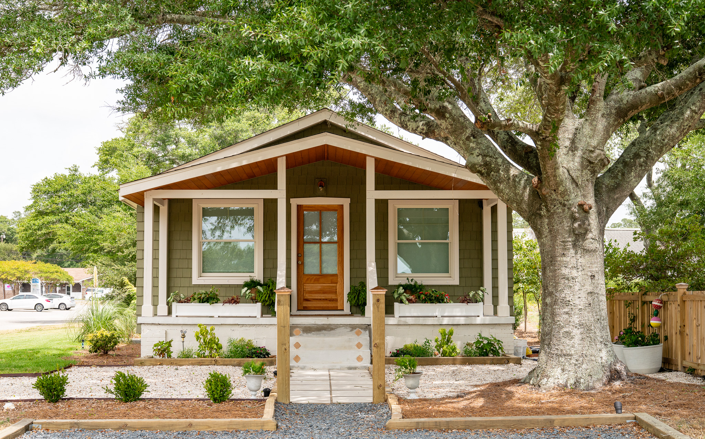
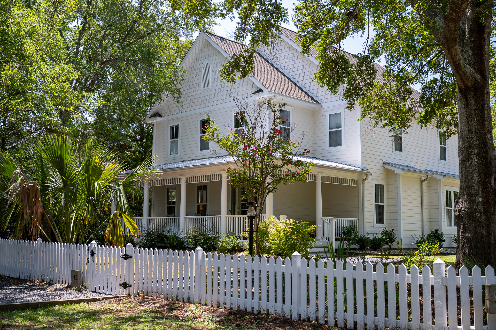
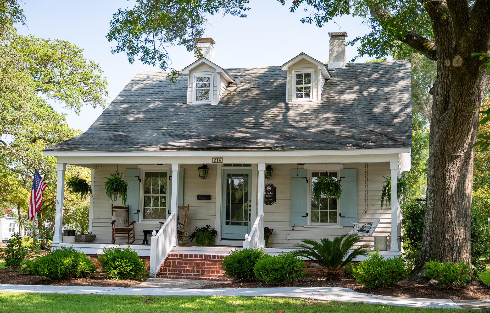
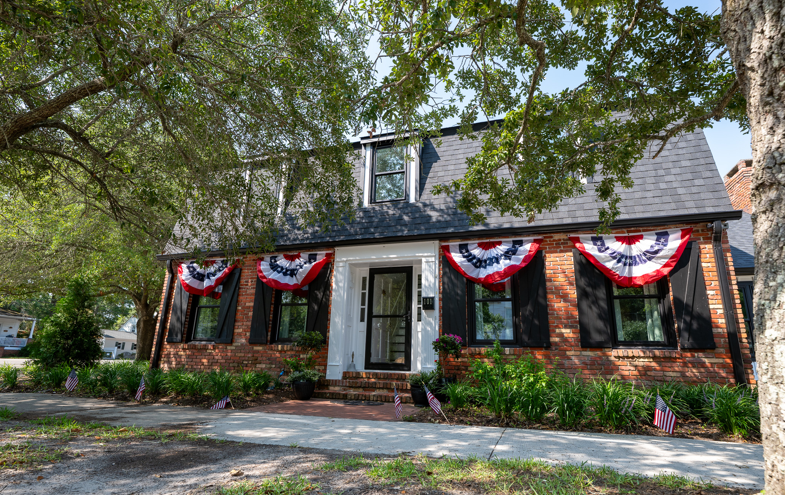
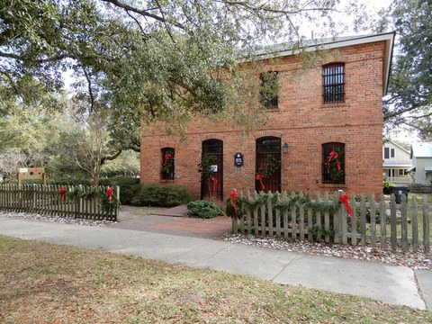

For tickets, check-in, and tour details, see the 2026 Holiday Tour of Homes page.

732 North Lord Street
Doug and Marla Czumble
Built in 1947, this modest home is representative of the family homes once common in mid-century Southport. When the current owners purchased it, the house was in poor condition and had been marked for demolition, but its structure was sound. They chose to preserve its original footprint while undertaking a complete renovation. The house was stripped to the studs and rebuilt for modern living, with raised ceilings and larger windows creating a more open, airy interior and locally sourced light cypress adding warmth and character. By preserving rather than replacing the house, the owners have ensured that this familiar piece of mid-century Southport will remain part of the city’s streetscape for decades to come.
Sponsored by the Southport Historical Society

619 North Lord Street
First Baptist Church
First Baptist Church traces its beginnings to 1908, when the Reverend McKay began holding worship services in a converted cabin in Southport. The small congregation, initially known as Mount Missouri, later moved across the street and worshipped beneath an open shed near the site of the present sanctuary. In 1909, the congregation was renamed First Baptist Church, reflecting its distinction as the first Baptist congregation established for African American worshippers in Southport. The congregation later worshipped in a church on Owens Street for more than 40 years before moving to its present location on North Lord Street in 1950. The current sanctuary, built that year, has served the congregation for more than 75 years.

516 North Lord Street
Jwantana and Curtis Frink
Built around 1950 by Joseph Alfred Parker, businessman, Southport native, and great-uncle of current owner Curtis Frink, this home has remained in the same Southport family throughout its history. Originally a two-bedroom, one-bath house, it was home for many years to Joseph and his wife, Ophelia, and later became Curtis and Jwantana Gardner-Frink’s family home. They raised their daughter here in the original house before undertaking a major renovation and expansion in 2019–2020. Now a three-bedroom, two-and-a-half-bath home, it offers plenty of space for another generation, the couple’s four grandchildren, when they come to visit.
Sponsored by Dosher Memorial Hospital

415 North Burrington Avenue
Graham and Stephanie Kirk
Built in 2002, this spacious home sits on a corner property spanning four lots, offering an unusual amount of outdoor space this close to downtown Southport. Numerous windows fill the interior with natural light, while generous gathering spaces and a separate guest cottage make the home especially suited to entertaining family and friends. The current owners have extensively renovated both inside and out, updating floors, cabinetry, tilework, finishes, paint, and landscaping. They also added a golf cart garage and dog pen and recently transformed the rear screened porch into a three-season room. Throughout, they have retained the home’s comfortable character while making it distinctly their own.
Sponsored by Live Oak Med Spa

510 West West Street
Jackie and Rich Smith
Built in 1948, this two-bedroom cottage, once home to the St. George family, combines cozy interiors with generous outdoor living. Two screened porches, one in front and one in back, invite coastal breezes through the house, while the .46-acre lot offers a park-like setting shaded by massive oaks and framed by hydrangeas and perennial plantings. Inside, the 1,088-square-foot home makes thoughtful use of space, with spacious living and dining areas, plantation shutters throughout, a wall of built-in shelves and window seat in the living room, and a custom banquette and beverage bar in the dining room. The result is a comfortable cottage with plenty of room for both quiet living and entertaining.
Sponsored by Intracoastal Realty

216 West West Street
Brian and Allyssa Larrabee
G. Dosher House
Built around 1890 by George Washington Dosher, this home remained in the Dosher family for more than 100 years. The house grew and changed along with its occupants, with a middle section likely added in the 1920s and the rear section, upstairs and front dormers added much later. Differences in the flooring still reveal clues to the home’s evolution. The current owners purchased the house in 2024 and undertook a full renovation, preserving much of the character contributed by generations of previous owners while adapting it for their growing family. Today, the home begins another chapter in its more than 130-year history.
Sponsored by Downtown Southport, Inc.

216 West Nash Street
Agnes, Allan and Kay Walters
Built on the site of an 1890s cottage by master carpenter Henry Daniel, this 4,000-square-foot Craftsman-style home was designed to complement its historic Southport neighborhood. Although the original cottage could not be saved, much of it lives on in the new house. Its original structural beams were incorporated into the interior as exposed beams, and the fireplace has the original 1800s mantel. The home’s barn doors are reclaimed or built from the original structure, and the original 1800s siding was used as shiplap beneath the stairs. Bricks from the cottage were reused for the portico, sidewalk, and driveway, with every 100th brick turned face down to reveal the Daniel maker’s mark, in tribute to the original brickmaker. Together, these details anchor the new home to its predecessor and to the family that helped build Southport itself.
Sponsored by Wade’s Jewelers

205 East West Street
David and Laura McHattie
N. Windsor House
Built in 1887 by steamboat engineer Nathan Windsor, this distinctive T-shaped home stands on Lot 92 of Smithville’s original 100 lots. Original features include 14-foot ceilings, heart-pine floors, early window glass and hardware, and Southport bows on the door and window trim. A former breezeway connecting the house and original detached kitchen was enclosed in the 1900s. Following Hurricane Florence, the front porch was enlarged, and a foyer, primary bath, and artist’s studio were added, incorporating timbers, bricks, and cedar salvaged from the property. Shaded by live oaks and a magnolia, the broad front porch remains one of the home’s defining features.
Sponsored by Ginger Harper-Coldwell Banker

101 North Atlantic Avenue
Kara and Jesse McPherson
Over the past 15 years, the current owners have transformed nearly every part of their home while preserving one of the features that first captured their attention — the brick floors in the kitchen. They opened the kitchen to the dining room, replaced carpeting with heart pine floors, and converted the garage into an inviting gathering space for family and friends. Originally, the upstairs could be reached only by an exterior staircase at the rear of the house. They added an interior staircase and remodeled the second floor to include three bedrooms, a bathroom and laundry room, creating a home designed for both family life and entertaining.
Sponsored by The State Port Pilot

232 East Moore Street
Jeanne and Clay Johnson
Built in 2019 and designed by architect Rich Bandera, this 2,068-square-foot home offers a contemporary interpretation of Southport’s traditional residential architecture. Its long, narrow form, gabled roof, lap siding, and welcoming front porch allow the newer home to sit comfortably among its older neighbors. Inside, the three-bedroom, two-and-a-half-bath home provides modern living spaces within a design that reflects the character of its historic surroundings.
Sponsored by Coastal Painting & Improvements

Old Brunswick County Jail Museum
318 East Nash Street
The Old Brunswick County Jail Museum, on the corner of Nash & Rhett Streets, will be decorated for the holidays and open for tours on Saturday, December 12, 11 AM – 5 PM.
Sponsored by the Southport Historical Society